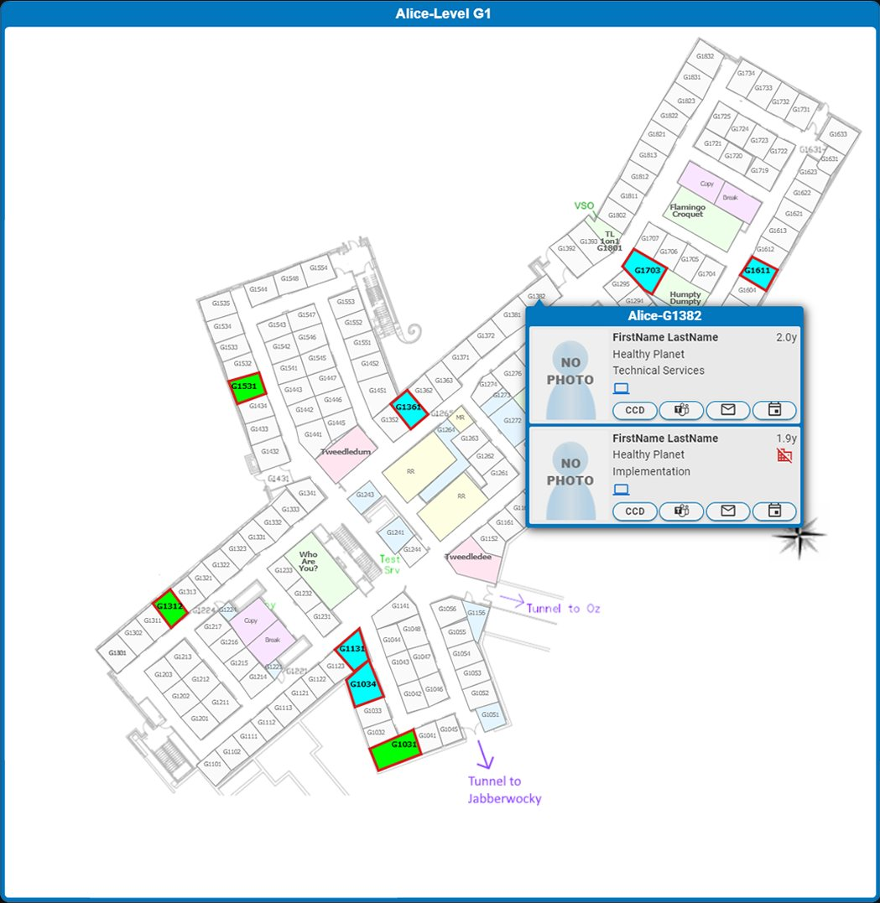
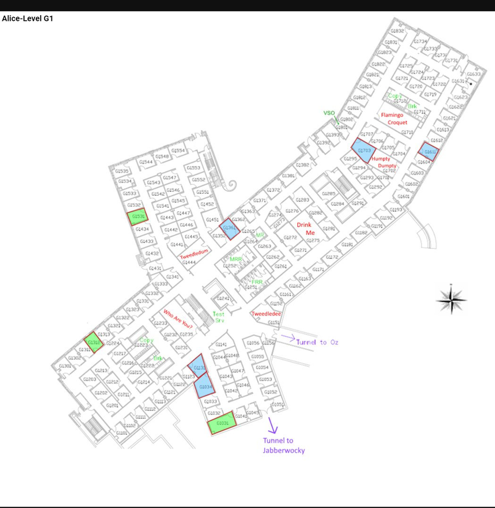

A full-stack delivery tool that turns any list of offices into interactive, highlighted floor-plan maps.
On Epic's 10,000-person Verona campus, my team ran equipment deliveries across 30+ buildings, each with 150+ offices. The internal map only let you search one office at a time, which made multi-stop runs painfully slow. I built a full-stack tool, with a Vue front end and C# / .NET services on the back, that takes a whole list of offices and renders them as interactive, color-coded floor-plan maps. It was later expanded into a core system the team kept relying on after I left.
The first version just dumped a hard-to-read list of static map images. I rebuilt it into the interactive tool below. Drag to compare the original (V1) with the rework (V2).


V1 V2Under a fairly simple UI, this was a system-design-heavy build. A few of the more interesting problems:
Rooms are polygons, not rectangles; some defined by up to 80 points at 50 digits of decimal precision. Rendering that raw made the map slow, so I normalized and simplified the coordinate data to keep rendering fast, payloads small, and zoom and pan smooth.
I designed the C# / .NET services and APIs to query floor-plan and occupant data for 4,000+ offices efficiently, returning exactly what each view needed instead of over-fetching.
It takes a custom pasted list of offices or a set linked directly from other internal tools, so it fit into existing delivery workflows instead of being a dead end.
The occupant hovercards were the most integration-heavy piece: one card pulled together several internal databases and APIs for people, devices, calendars, and profiles.
Every room gets a legible label and is color-coded by type, a big step up from the original static images.
Click an office to grey it out as you deliver; the whole map greys out once the floor is done.
A one-click print view reformats the page for paper, for colleagues who leave the laptop behind.
Zoom in on a single map or out to see several at once, for full-screen and split-screen workflows.